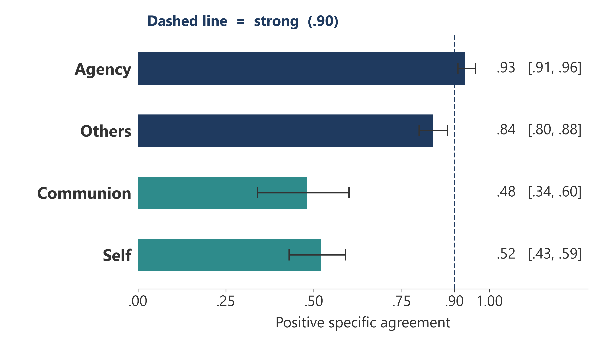
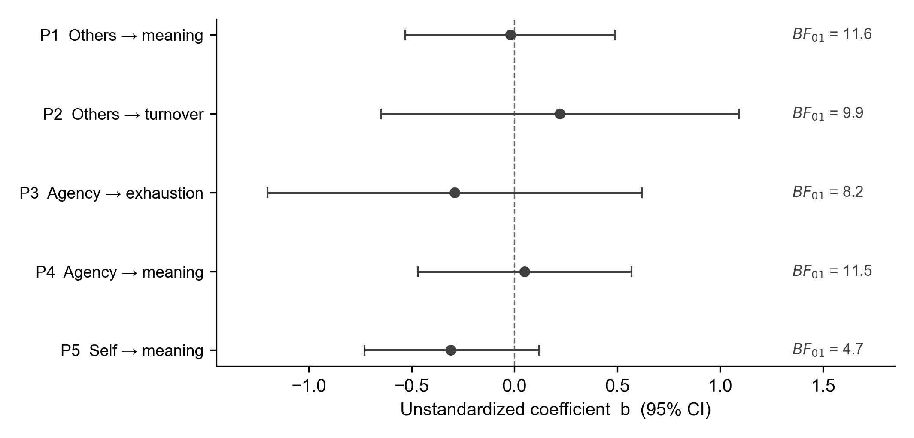
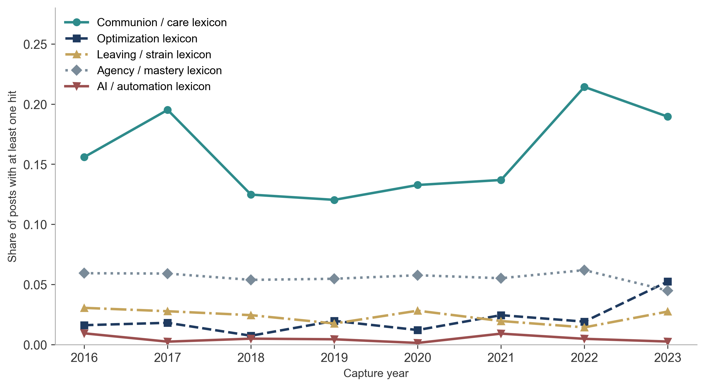
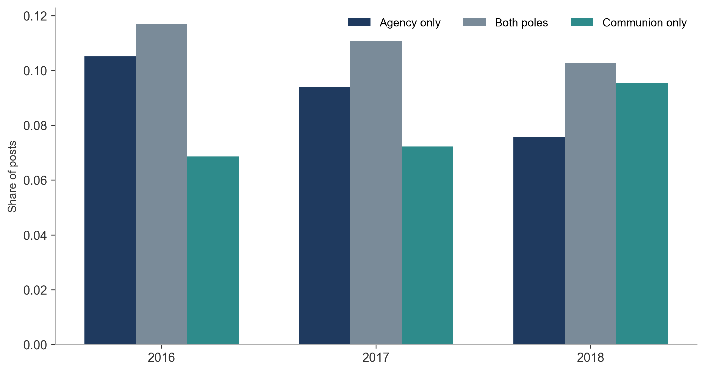
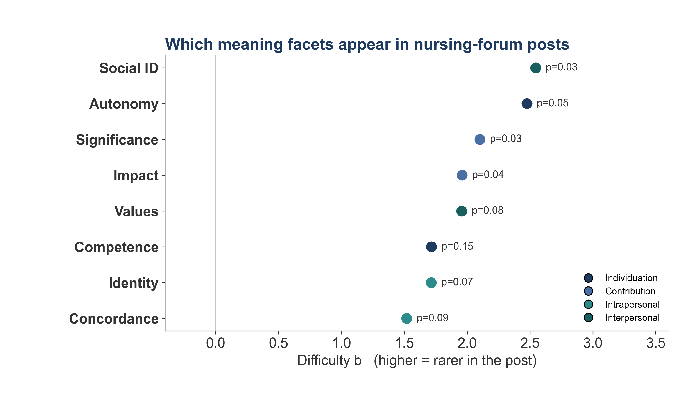

One sentence
If optimization removes the tasks through which people experience meaning, efficiency is paid for in strain and exit.
The argument, in three moves
1. Meaning is task-bound
Rosso, Dekas, and Wrzesniewski (2010) organize meaning as Agency–Communion crossed with Self–Others. Helping work draws heavily on contribution and unification. Those are also the tasks now first in line for documentation, monitoring, and coordination tools.
2. More meaning is not always better
Calling-infused work can bind people to exhaustion (Bunderson & Thompson, 2009). Rosso and colleagues left open a curvilinear conjecture: too many active pathways may exhaust rather than sustain. We could not test that here. Almost no one narrated three or more pathways.
3. Measurement at scale is the new risk
People analytics will be asked to score meaning from text. A model that copies a shaky human pair will look precise and still be wrong. Dimension-specific human ceilings come first. Substitution comes second, if at all.
The 2 × 2 we coded
Thirteen binary facets nest in four pathways. A pathway is present if any of its facets is present. We do not score Rosso’s seven mechanisms as a middle layer; they cross-cut the 2 × 2.
Individuation · Agency × Self
Control / autonomy · Competence · Self-esteem
Contribution · Agency × Others
Perceived impact · Significance · Interconnection · Self-abnegation
Self-connection · Communion × Self
Self-concordance · Identity affirmation · Personal engagement
Unification · Communion × Others
Shared value systems · Social identification · Dyadic connectedness
Figure note. Labels follow Rosso et al. (2010). The project coding file used Intrapersonal / Interpersonal for the communion row. Aggregation is inclusive OR, not an average.

The design
Time 1 (March 2016): critical-incident narratives and meaning surveys, helping-profession workers, healthcare-majority online panel, N ≈ 307. Time 2 (February–March 2017): well-being, engagement, burnout, and turnover, n = 144 complete longitudinal cases. Two trained humans coded 276 stories on all 13 facets (3,614 cells). Disagreements went to blinded adjudication. Language-model prompts were built only on a locked training slice, evaluated once on development, and never applied to the sealed confirmatory holdout.

Finding 1. The human ceiling is not one number
Positive specific agreement, case-level bootstrap 95% CIs, n = 276.
Dashed vendor claim: “we measure belonging from text at .90.” The human pair in this codebook does not reach that on communion. Ask which ceiling the product beat, on which dimension.

Finding 2. No engineered prompt met the standard set for acceptance
Six frozen prompt architectures were scored once on the 55-case development partition against bars locked to the lower bound of the human–human interval: agency ≥ .910, others-directed ≥ .805. Communion and self carried no acceptance bar because human agreement was too low to validate against. Every prompt was disqualified on false positives over cells both humans had coded absent. Every prompt also missed the agency bar (range .750–.798). Study 1 analyses used the human composite codes. The sealed test set was never opened.
Prompts selected to match a human pair will carry that pair’s disagreements forward. Session 6 already specified the other test: an independent panel, not chosen on human PSA, scored against later well-being and retention. That is Tier 3. It was parked in September so the paper could ship on human gold. It is back on the table (ADR 0010). The sealed test set has not been opened for it.
Finding 3. The registered next-year tests were not supported
Others-directed, agency, and self-directed codes did not forecast Time 2 meaningfulness, exhaustion, or turnover intentions in the registered models (Table 2 in the manuscript; all one-tailed p ≥ .268; joint block ΔR² = .012, p = .534). For next-year meaningfulness the Bayes factor treats the null as decisive (BF01 = 481.5). The same codes did track concurrent WAMI scores (others-directed r = .24; agency r = .20; contribution r = .23). The codebook was not empty. It was not incremental for next year.


The exploratory thread that reached next year
When Time 1 stories grounded meaning in competence or mastery, Time 2 turnover intentions were higher (b = 1.40, 95% CI [0.58, 2.22], p = .0008, n = 100) and so was emotional exhaustion (b = 0.95 [0.20, 1.70], p = .014, n = 94). Seventeen of 140 matched cases carried the code. The association survived a joint Time 1 survey battery. It is a candidate for a designed test. It is not a product finding.

Occupational talk, 2016–2026
Internet Archive snapshots of allnurses.com, 7,709 posts of at least 200 characters, capture years 2016–2026. Closed-form dictionaries marked care, mastery, optimization, AI/automation, and leaving or strain. The reference year is 2016, the start of the series. 2023 is not treated as the start of workplace tools; that talk was already in motion by 2022. Capture year is not use of an AI system. Dictionaries are not scored Rosso facets.



What to do this quarter
- Seal a holdout before anyone iterates a prompt on employee text.
- Write the human agreement bar down first, by dimension. Do not use one global F1.
- Automate leakage and direct-identifier checks in the scoring job, not in a slide appendix.
The longer kit is in Try this quarter.
Print tiles: hang slides 1–16. Slides 17–19 are extra letter pages (competence, concurrent WAMI, forum lexicon). Open Monnot_Poster_v3.pptx.
Study 1 does not measure AI exposure. The paradox is read by placing the meaning map against the documented automation frontier. Forum results are lexical and exploratory.